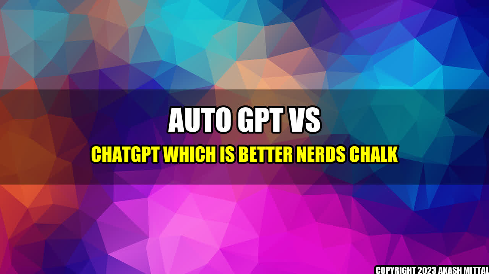

Which AI Text Generator is Best: Auto-GPT vs ChatGPT
Discover the difference and find out which one is right for you
By Akash Mittal
An Interesting Story:
Imagine you're a content creator who needs to generate a large volume of high-quality text every day. You've tried every tool and software you can find, but nothing quite hits the mark. That's when you hear about two AI text generators taking the market by storm: Auto-GPT and ChatGPT.
You're intrigued by the concept of machines generating written content, so you decide to try both tools out. What you find is that Auto-GPT and ChatGPT are both incredibly powerful in different ways, but one stands out for your specific use-case.
Concrete Examples:
Let's take a closer look at the unique features of Auto-GPT and ChatGPT:
- Auto-GPT: This text generator uses deep learning models that are pre-trained using huge data sets of text. It's great for generating coherent, factual text on a wide range of topics. You can use it to create articles, news stories, and even product descriptions.
- ChatGPT: Unlike Auto-GPT, ChatGPT is designed specifically for conversations with human-like responses. This text generator adapts quickly to new scenarios and can keep a conversation going for a long time. It's ideal for creating chatbots, virtual assistants, and customer service representatives.
As you can see, Auto-GPT and ChatGPT have different strengths depending on the type of text you need to generate.
Conclusion in 3 Points:
- Auto-GPT: Best for generating coherent, factual text on a wide range of topics.
- ChatGPT: Ideal for creating chatbots, virtual assistants, and customer service representatives.
- Both: Are powerful AI text generators that can be harnessed to lower costs, improve productivity, and ensure quality.
Akash Mittal Tech Article
Share on Twitter Share on LinkedIn